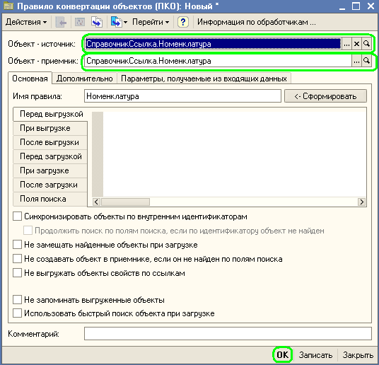
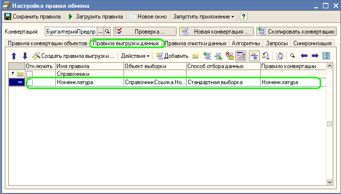
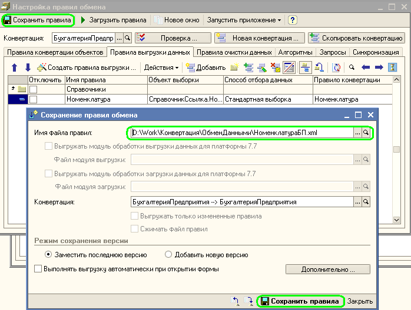
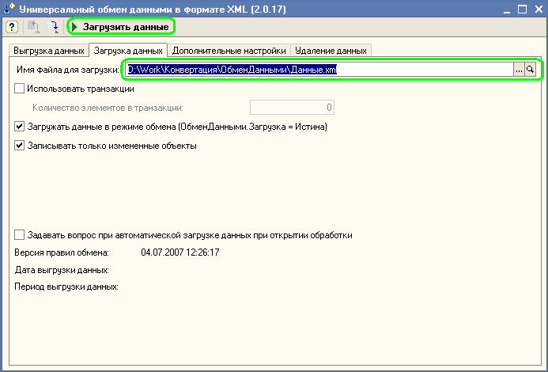

Для выгрузки данных недостаточно установить соответствия объектов и реквизитов источника и приемника. Нужно еще указать какие именно объекты и как выгружать. Для этого необходимо создать правила выгрузки данных. У нас готовы все необходимы правила конвертации объектов, свойств и значений. Практически все уже сделано, осталось только указать какие именно объекты мы хотим переносить из информационной базы источника в приемник. На первый взгляд постановка вопроса очень странная, естественно, мы хотим переносить все объекты для которых у нас заданы правила конвертации объектов!? Но это не совсем верный ответ. При обмене данными всегда ставится задача обмена конкретными объектами. Кроме того, существуют служебные объекты, о которых пользователи не догадываются, да и не должны знать.
Правила выгрузки данными указывают какие объекты разрешить пользователю для выгрузки.
Проще всего объяснить это на конкретном примере. Сформулируем задачу: Имеются две однотипные конфигурации "Бухгалтерия предприятия". Необходимо из одной конфигурации в другую загрузить справочник "Номенклатура".
Покажем последовательность действий в этом случае:
1. Создаем новое правило обмена данными
2. В появившемся окне сообщения указываем, что хотим самостоятельно создать новое правило конвертации объектов:
3. Указываем объект источник и приемник:

4. Согласимся с предложением программы автоматически создать правила конвертации свойств и значений (можно заметить, что автоматически были созданы еще правила конвертации объектов, они как раз нужны для того что бы переносить объекты не примитивных типов справочника "Номенклатуры". Посмотрите, что программа создала несколько правил конвертации объектов. Эти правила созданы не случайно!). После чего программа предложит нам автоматически создать правила выгрузки данных. Выберем, что бы программа создала правило выгрузки данных только для номенклатуры:

5. Если перейти на закладку "Правила выгрузки данных", то увидим что создано всего лишь одно правило выгрузки. То есть мы сообщили программе, что при выгрузке данных нужно выгружать только объекты справочника "Номенклатура" (плюс ко всему будут выгружены так же те объекты на которые элементы справочника "Номенклатура" ссылаются):

6. Правила полностью готовы к использованию. Сохраним их в файл:

7. Откроем программу "Бухгалтерия предприятия" откроме универсальную обработку выгрузки и загрузки данных из XML и загрузим правила обмена:

В списке объектов для выгрузки присутствует только справочник "Номенклатура". Собственно в этом списке будет присутствовать только список объектов, которые заданы в правилах выгрузки (по сути правила выгрузки именно это и определяют. Пользователю не показывается лишняя информация о связанных объектах, которые так же подлежат выгрузке). Далее, пользователь может указать дополнительные ограничения для выгрузки данных и выгрузить данные в файл.
8. После того как файл с данными был выгружен остается только загрузить эти данные в информационной базе - приемнике:

Внимание
Для ускорения выгрузки данных рекомендуется располагать правила выгрузки в таком порядке, что бы, если есть зависимые правила, то все ссылки были снизу вверх. То есть, в начале списка выгружаемых данных необходимо располагать объекты, которые ни на кого не ссылаются (Например, если справочник Пользователи ссылается на справочник Физические Лица, то рекомендуемый порядок выгрузки данных Физические Лица, Пользователи). Такой способ расположения объектов может существенно сказаться на скорости выгрузки данных.
Если в правиле конвертации объектов нет конвертации табличных частей или движений и в событиях перед выгрузкой данных нет обращений к самому выгружаемому объекту, то имеет смысл установить у правила Выгрузки данных Флажок "Выбирать данные для выгрузки одним запросом". Такой подход позволит при выгрузке данных одним запросом получить все данные, которые нужно выгружать и это может заметно сократить время выгрузки.
Эти достаточно простые оптимизации позволяют сократить время выгрузки данных на 30-40% и более.